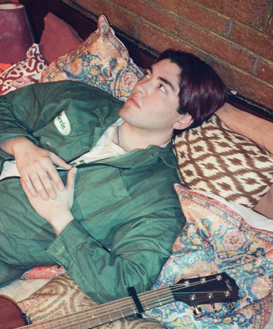

<!DOCTYPE html>
<html lang="es">
<head>
    <meta charset="UTF-8">
    <meta name="viewport" content="width=device-width, initial-scale=1.0">
    <title>Document</title>
</head>
<body>
    
</body>
</html>
<h1>Kevin Kaarl</h1>

<table>
    <h2>
        <p>Bibliografia
            <li></li>
            <p>Kevin Eduardo Hernández Carlos, ​ más conocido como Kevin Kaarl, es un cantante, guitarrista, compositor y músico mexicano. Se especializa en el género de música folk.​ Wikipedia
                Nacimiento: 15 de mayo de 2000 (edad 25 años), Meoqui
                Género: Folk
                Sello discográfico: Kevin Kaarl
                Años activo: 2018-presente
                Familiares: Bryan Kaarl (hermano gemelo)</p>
        </p>
    </h2>
    
<p>Durante su infancia y adolescencia participó en coros y bandas musicales. A los 7 años entró a un grupo juvenil en Meoqui; en la primaria, entró al coro de esa misma escuela, y años después entró a otra banda de su ciudad. En 2014 dejó de tocar la guitarra y de cantar para iniciar un proyecto de fotografía y cine.
    Previo a iniciar su carrera musical, retomó la guitarra, mientras que su hermano gemelo Bryan, inició actuando con la trompeta quien también hace segunda voz en sus presentaciones en vivo.

</p>

</table>

   <link rel="stylesheet" href="../audio/AudioparaK.mp3"> 
   <head>
<body>
    
<header>
    <h1> Canciones y Videos</h1>
</header>
<audio src="../audio/AudioparaK.mp3" controls></audio>
              <audio src="../audio/AudioKK.mp3" controls></audio>


</body></head>

<body>
    <html>

  <h1>Videos</h1>
  <link rel="stylesheet" href="..//Video/K.mp4" controls>
</body>


    
